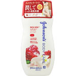
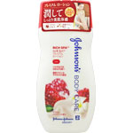

独自のプレミアム美容保湿処方のプレミアムボディローションです。
うるおいに満ちた、シルクのようななめらかな肌へ導きます。
１．スパミネラル※１と厳選された美容成分配合の美容スパ処方
肌のキメを整えるスパミネラル※１に加えて、厳選された美容成分を配合。うるおいに満ちた格別の肌触りをお楽しみいただけます。
※１ 塩化Ｎａ（整肌成分）
２．香水のように香りが変化するこだわりのフレグランス
特別に調合されたフレグランス配合。
つけた時だけではなく、時間の経過とともに変化する香りをお楽しみいただけます。
○贅沢な美容成分を配合
○美容ビタミン※２
３種のビタミンの組み合わせ。肌のキメを整える。
○ザクロエキス※３
肌にふっくらとしたハリを与える。
※２ 整肌成分：パルミチン酸レチノール、パントテン酸、酢酸トコフェロール
※３ ザクロ果実エキス
○うっとりと甘い香り
ザクロとジャスミンの香り